Lab 9
Objective:
In this lab, I created a line map of the arena by combining TOF data points taken from 4 positions within. To collect datapoints, I did a 360 degree spot turn using PID to maintain angular speed, while sampling from the front-facing TOF rapidly.
Control
For this lab, I opted to do proportional control on angular speed. Accessing the angular speed readout on the gyroscope module of the IMU, I set error as the difference between the current speed and my target speed of 25 degrees per second. Experimenting with Kp, I arrived at 3.0 being optimal for maintaining this speed, adjusting my default PWM of 100. To spot spin clockwise, the left side is spun forward, while the right side backwards. As the left is slightly more powerful than the right, the right PWM is set 15 higher than the left consistently. All wheels were taped over to reduce their grip levels and allow for easier spot turning. The TOF sensor is sampled whenever ready as in previous labs, and the kalman filter was disabled (as the dynamics are not the same as previous labs). At a rotation of 25 degrees per second, and about 70 measurements per second, I expect a measurement window of 14400 milliseconds to sweep a 360 degree area and produce about 1000 discrete measurements. In the 14 milliseconds between measurements I expect to have changed heading by ~0.35 degrees. However, as seen in the data below, the instantaneous angular speed readings from IMU are either noisy, have too short of a sampling period, or my control is not very robust, as there is a relatively significant degree of variability in my angular speed. I was informed including a low pass filter in the gyro settings would likely not improve this behavior dramatically, and given the 25 mean angular speed, I continued the lab with this control setup. I had also seen in previous labs that the TOFs measure arbitrary values when pointed at distances greater than ~2 metres, thus I expect all such measurements taken in a 4x4 room or in the arena would be invalid.
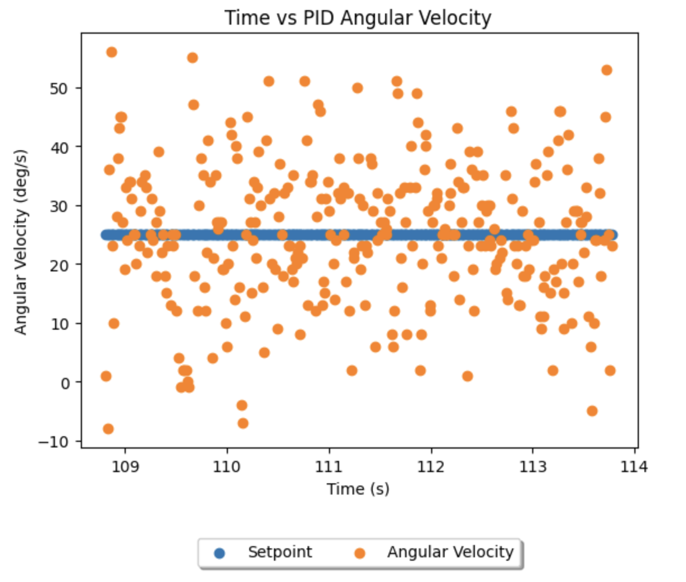
In seeking to improve TOF accuracy in the arena I experimented with the distance modes on the TOF, and found no significant difference. I also conducted 2 spins from each location in the arena, and found no significant differences in readouts - except for the distant regions that return arbitrary readings, for which neither run was more accurate.
Reading Distances
The average of the two runs at each of the four arena coordinates (-3, -2), (5, -3), (5, 3), (0, 3) were as follows:
(-3, -2):
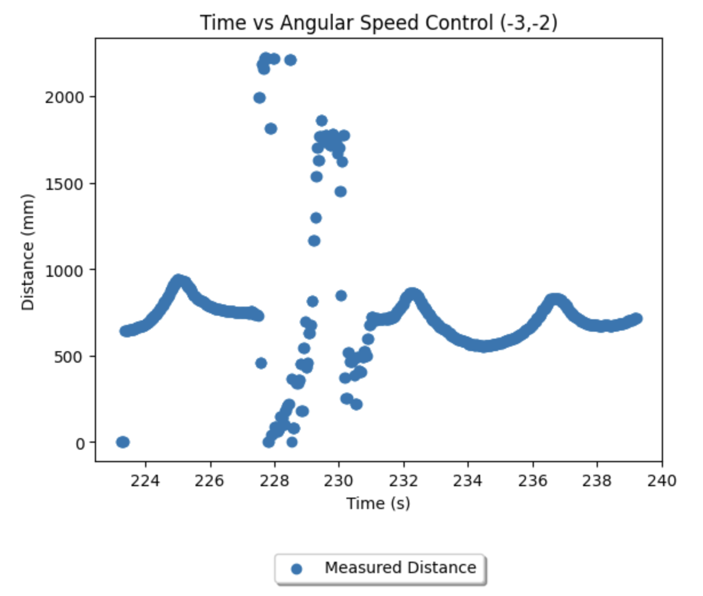 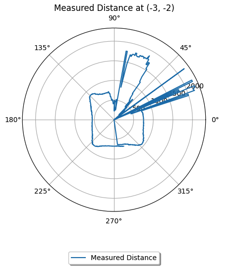
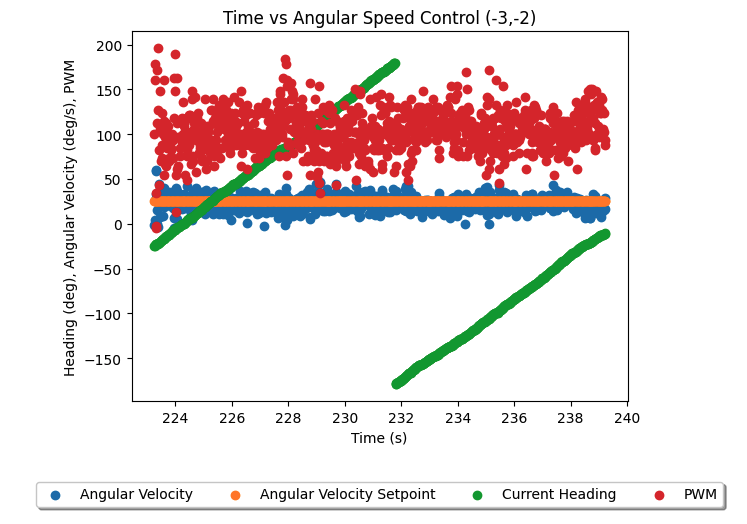
(5, -3):
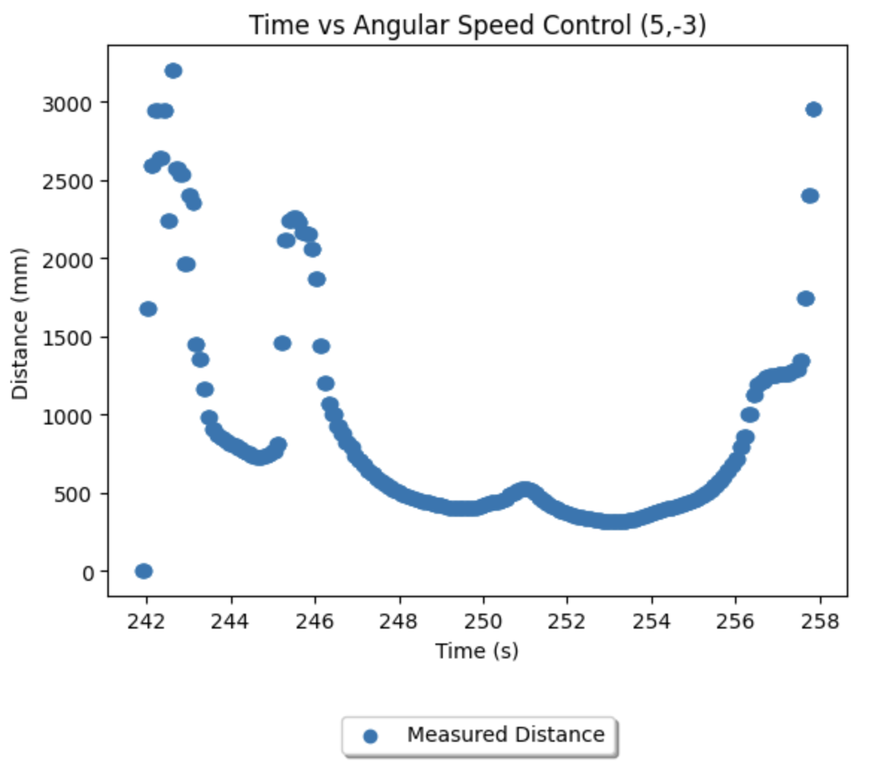 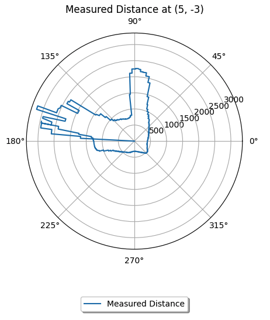
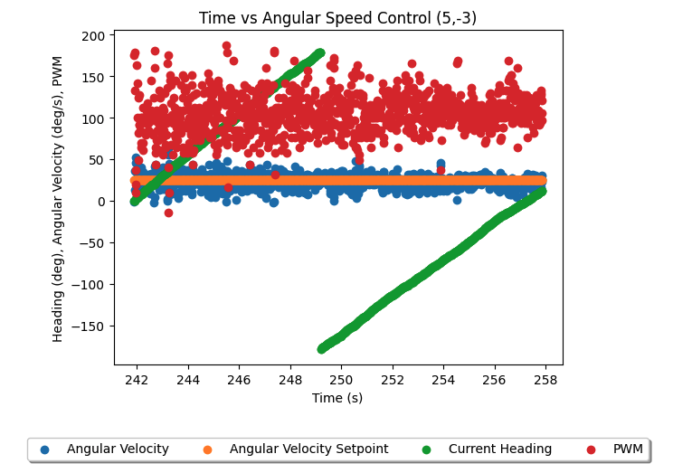
(5, 3):
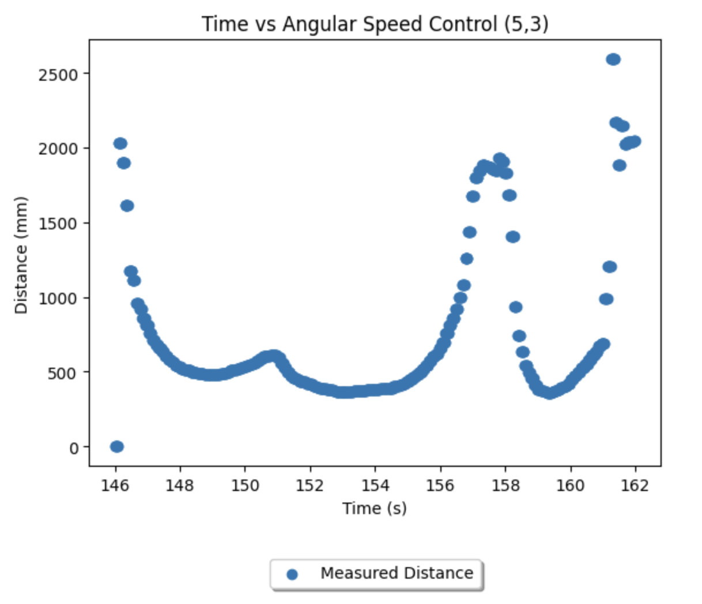 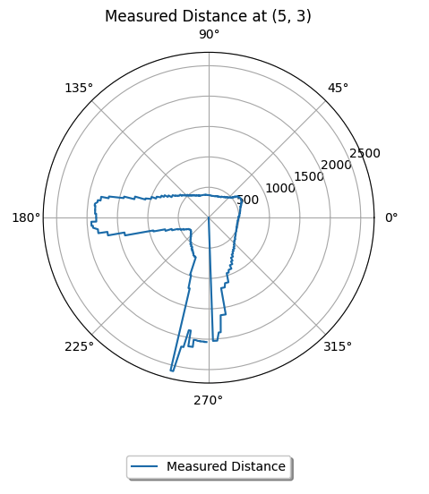
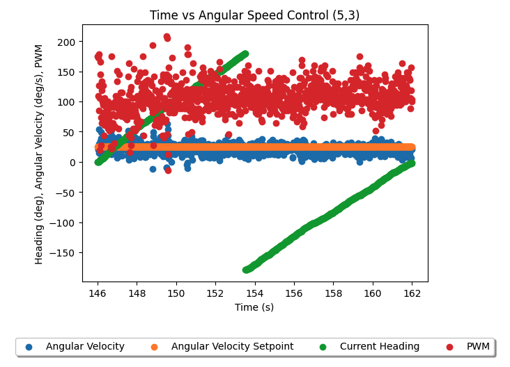
(0, 3):
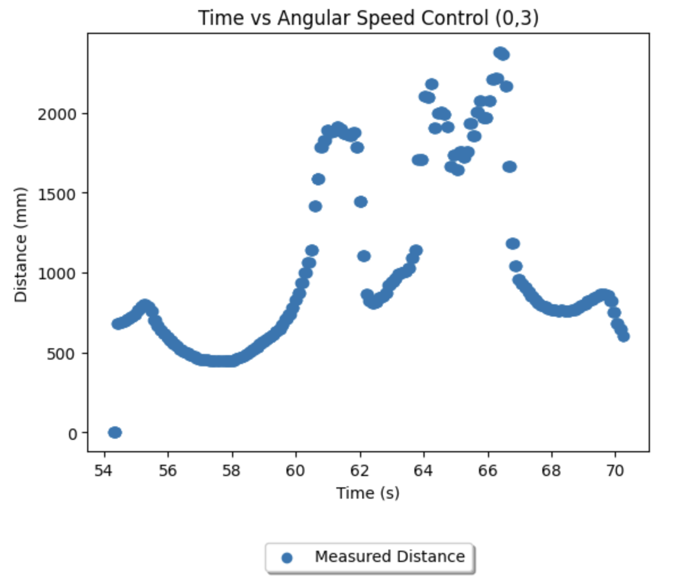 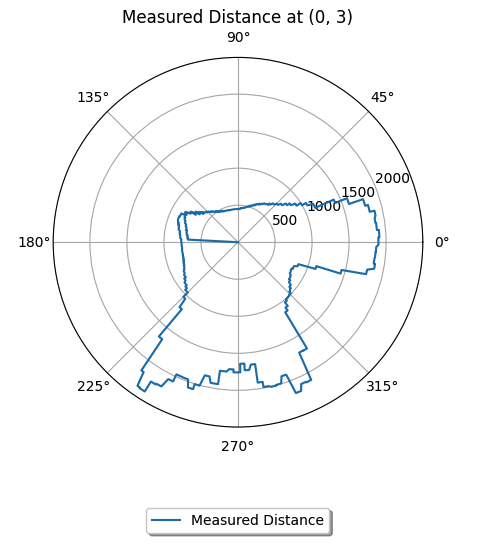
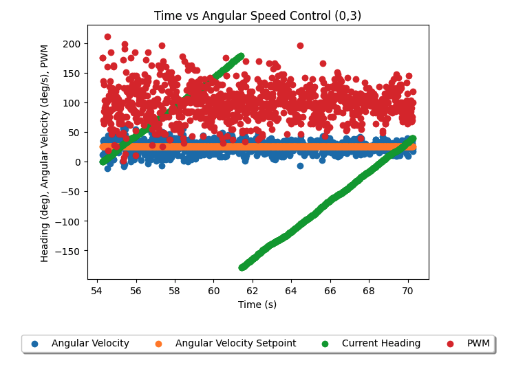
Merge and Plot
To convert the distances recorded from each of these positions into a map, I simply applied x = distance * cos(theta) and y = distance * sin(theta), and added the starting coordinates, for each data point in the jupyter notebook as follows. The heading was computed by assuming 25 degree per second rotation up to the timestamp of the datapoint.
By maintaining lists of which position produced which data points, the lists could then be put together into a single scatter plot and labelled accordingly, as follows.
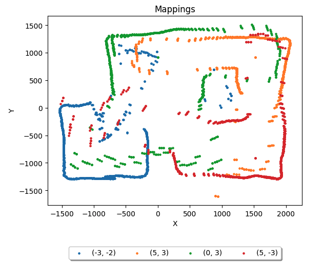
Eyeballing the scatterplot, I marked vertices of the walls and boxes, and produced the following lists of line start and endpoints. I finally amended the scatterplot to incorporate these lines. Cross-referencing with Rafael's coordinates, they are reasonably accurate, and ready to be imported into lab 11.
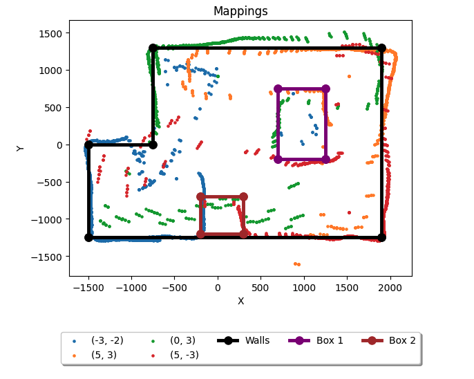